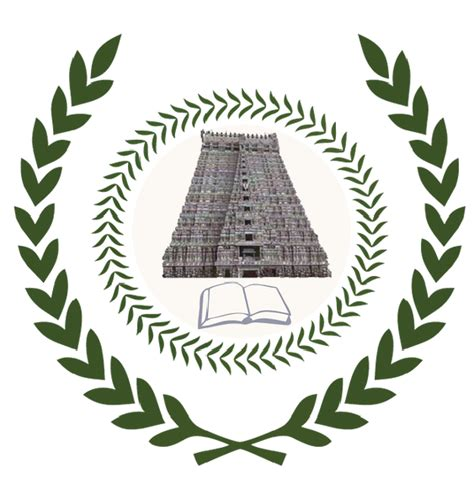

Adeep Hande
I am an incoming graduate student in Data Science at Luddy School of Informatics, Computing, and Engineering at Indiana University Bloomington this fall. My interest spans across several domains where I have previously worked, including but not limited to, such as Network Analysis, Semantic Parsing, Speech Processing, Natural Language Processing . In my senior year, I interned as a Data Scientist at the corporate strategy team of Tata Communications, to build an AI-powered Network Expansion Planning tool. Previously I worked on Code-mixed low-resource NLP (Dravidian Language Family) under the supervision of Prof. Bharathi Raja Chakravarthi. I am deeply fascinated by Natural Language Processing and its applications in multimodal learning and related interdisciplinary fields.
I recently completed my bachelors in Computer Science and Engineering at the Indian Institute of Information Technology Tiruchirappalli,.
Education
 Indiana University Bloomington
Indiana University Bloomington
 Indian Institute of Information Technology Tiruchirappalli
Instituto Superior Técnico (IST), Lisbon, Portugal
 Indian Institute of Technology Kharagpur
Indian Institute of Technology Kharagpur
Experience
Core Member
Data Scientist Intern (Corporate Strategy--Innovations)
Projects:
1. AI-based Network Expansion Planning -- (Mar 2022 - July 2022)
2. AI-Powered real-time Fraud Prevention as a Service (FPaaS) -- (Dec 2021 - Feb 2022)
Research Intern
Developed a multi-task learning framework for Sentiment Analysis and Offensive Language Identification in Dravidian Languages. Constructed Code-Mixed Datasets scraped from YouTube for Kannada-English language.
Research Intern
Developed a Deep Learning based architecture to detect diabetic retinopathy at two levels, a binary classification and fine-grained classification. Used Attention based vision models along with several data preprocessing techniques to achieve the best results.
Publications
- Hande, A., Hegde, S.U.& Chakravarthi, B.R.
- Multi-task learning in under-resourced Dravidian languages
- Journal of Data, Information, and Management. 4, 137–165 (2022). https://doi.org/10.1007/s42488-022-00070-w
- [PDF] | [Reviews] | [BibTex]
- Hande, A., Ponnusamy, R., Kumaresan, P.K, Priyadharshini R. & Chakravarthi, B.R.
- Modeling Homophobia and Transphobia detection using Data-Augmentation in a Multilingual Code-mixed Setting
- International Journal of Information Management Data Insights (Accepted)
- [Preprint] | [Reviews]
- Hegde SU, Hande A. , Priyadharshini R, Thavareesan S, Sakuntharaj R, Thangasamy S, Bharathi B, Chakravarthi BR.
- Do Images really do the Talking? Analysing the significance of Images in Tamil Troll meme classification
- Advances in Computational Intelligence (Accepted)
- [Preprint] | [Reviews]
- Hande, A. , Puranik, K., Yasaswini, K., Priyadharshini, R., Thavareesan, S., Sampath, A., ... & Chakravarthi, B. R. (2021).
- Offensive language identification in low-resourced code-mixed dravidian languages using pseudo-labeling.
- Computer Speech and Language (Accepted)
- [Preprint] | [Reviews]
- Hande, A., Hegde, S.U., Sangeetha S., Priyadharshini,R. & Chakravarthi, B.R.
- The Best of both Worlds: Dual Channel Language modeling for Hope Speech Detection in low-resourced Kannada
- Proceedings of the Second Workshop on Language Technology for Equality, Diversity and Inclusion, ACL 2022
- [PDF] | [Reviews] | [BibTex]
- Vasanth P., Benhur S.,Hande, A.& Chakravarthi, B.R.
- DE-ABUSE@TamilNLP-ACL 2022: Transliteration as Data Augmentation for Abuse Detection in Tamil
- Proceedings of the Second Workshop on Speech and Language Technologies for Dravidian Languages, ACL 2022
- [PDF] | [Reviews] | [BibTex]
- Chakravarthi, B.R., Priyadharshini, R., Cn, S., Sangeetha, S., Subramanian, M., Shanmugavadivel, K., Krishnamurthy, P., Hande, A. et al.
- Findings of the Shared Task on Multi-task Learning in Dravidian Languages
- In Proceedings of the Second Workshop on Speech and Language Technologies for Dravidian Languages (pp. 286-291)
- [PDF] | [BibTex]
- Benhur S, Nayak R, Sivanraju K, Hande A. , Navaneethakrishnan SC, Priyadharshini R, Chakravarthi BR.
- Hypers at ComMA@ ICON: Modelling Aggressiveness, Gender Bias and Communal Bias Identification
- Multigen 2021 at the International Conference on Natural Language Processing
- [PDF] | [Reviews] | [BibTex]
- Hande, A., Puranik K., Priyadharshini R. & Chakravarthi, B.R.
- Domain identification of scientific articles using transfer learning and ensembles
- Pacific-Asia Conference on Knowledge Discovery and Data Mining, pp. 88-97. Springer, Delhi, India 2021.
- [PDF] | [Reviews] | [BibTex] | [Code]
- Hande, A., Puranik K., Priyadharshini R., Thavareesan, S., & Chakravarthi, B.R.
- Evaluating Pretrained Transformer-based Models for COVID-19 Fake News Detection. 5th International Conference on Computing Methodologies and Communication (ICCMC), pp. 766-772. IEEE, 2021.
- [PDF] | [Reviews] | [BibTex]
- Puranik, K., Hande A. et al.
- Attentive fine-tuning of Transformers for Translation of low-resourced languages@ LoResMT 2021 4th Workshop on Technologies for MT of Low-Resource Languages (LoResMT 2021), pp. 134-143
- [PDF] | [BibTex] | [Code]
- Yasaswini, K., Puranik, K., Hande, A. et al.
- IIITT@ DravidianLangTech-EACL2021: Transfer Learning for Offensive Language Detection in Dravidian Languages In Proceedings of the First Workshop on Speech and Language Technologies for Dravidian Languages, pp. 187-194. 2021, Kyiv
- [PDF] | [Reviews] | [BibTex] | [Code]
- Puranik, K., Hande A. et al.
- IIITT@ LT-EDI-EACL2021-Hope Speech Detection: There is always hope in Transformers Proceedings of the First Workshop on Language Technology for Equality, Diversity and Inclusion, pp. 98-106, 2021, Kyiv|
- [PDF] | [Reviews] | [BibTex] | [Code]
- Hegde, SU., Hande A., Priyadarshini R. et al.
- UVCE-IIITT@ DravidianLangTech-EACL2021: Tamil Troll Meme Classification: You need to Pay more Attention In Proceedings of the First Workshop on Speech and Language Technologies for Dravidian Languages, pp. 180-186. 2021, Kyiv
- [PDF] | [Reviews] | [BibTex] | [Code]
- Jada, P.K, Reddy D.S, Hande A., Priyadharshini, R. et al.
- IIITT at CASE 2021 Task 1: Leveraging Pretrained Language Models for Multilingual Protest Detection In Proceedings of the 4th Workshop on Challenges and Applications of Automated Extraction of Socio-political Events from Text (CASE 2021), pp. 98-104 2021|
- [PDF] | [Reviews] | [BibTex] | [Code]
- Hande, A., Priyadharshini R. & Chakravarthi B.R.
- KanCMD: Kannada CodeMixed dataset for sentiment analysis and offensive language detection. Proceedings of the Third Workshop on Computational Modeling of People's Opinions, Personality, and Emotion's in Social Media, pp. 54-63. 2020, Barcelona, Spain
- [PDF] | [Reviews] | [BibTex] | [Dataset]
2022
2021
2020
Projects
AI-Based Network Expansion Planning
- This project seeks to identify potential high bandwidth zones across all T1, T2, T3, etc., cities in India, where Tata Communications can expand its network presence to cater to customers' business needs.
- Implemented cutting-edge clustering algorithm, Diameter Clustering
- Created a streamlit-based web application and deployed it on docker, for it be used by Tata Communications' Network Expansion team
- The application points the potential places for network expansion based on feasibility requests, and gives the co-ordinates of the cluster
Multi-task Learning for Auxiliary tasks
Developed Multi-task learning frameworks to address the lack of annotated data for low-resourced languages. Experimented with several loss functions and benchmarked the models on the datasets of three low-resourced languages. Experimental results indicate that Multi-task learning is effective on very closely related tasks, and the loss functions assigned to each tasks.(Source code)
Dual Channel Language Model
Constructed a corpus consisting of ~7K comments for sequence classification. Used Google Translate API to translate all the code-mixed sentences into English. Computed the Weighted sum of the outputs of the two datasets to improve the performance of the models.(Source code)